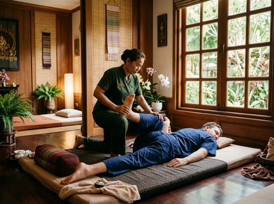

★★★★★ Quality gate failures: ctas. Review and edit before removing this notice. ★★★★★
Thai massage and Swedish massage are two of the most widely sought forms of therapeutic massage, yet they work in fundamentally different ways.
Thai massage is a traditional technique from Thailand with over 2,500 years of history. It combines acupressure, assisted stretching, and energy line work to improve flexibility and restore balance. Swedish massage, developed in the early nineteenth century, uses long flowing strokes and kneading to promote deep relaxation and ease muscle tension. Knowing the differences helps you choose the session your body actually needs. At Serendipity Massage Therapy & Wellness in Glasgow, both styles are available from a trained team who can advise which is right for you.
Thai massage is performed fully clothed on a padded mat on the floor. No oils are used. Your therapist works with their hands, thumbs, elbows, knees, and feet to apply pressure along the body's sen lines — the energy pathways central to traditional Thai healing.
The session also includes passive stretching and joint work. Your body is guided into positions that resemble yoga postures, which is why Thai massage is sometimes called "assisted yoga."

Sessions typically run between 60 and 90 minutes. The stretching and compression make Thai massage more active than most other treatments, and many people leave feeling physically looser and energised rather than sleepy.
Swedish massage uses five core techniques applied to the skin with oil or lotion. These are effleurage (long, gliding strokes), petrissage (kneading), tapotement (rhythmic percussion), friction, and vibration. As noted in the Wikipedia article on massage, massage techniques are broadly used to treat stress and pain — and Swedish massage is the most recognised form in Western practice.
You lie on a massage table while your therapist works across major muscle groups in a flowing, steady rhythm. It is deeply calming, and it is common for clients to fall asleep during a session.
Swedish massage is known as "classic massage" across much of Europe. It was first developed in 1812 at the University of Stockholm. Since then, it has become the standard for relaxation-focused bodywork.
Despite their different methods, both styles produce overlapping results. A peer-reviewed literature review found that Thai and Swedish massage both relieve chronic low back pain, improve range of motion, and reduce anxiety — despite being based on different theories.
A separate study on fatigue found both improved sleep and reduced stress. Thai massage, however, produced a stronger energy boost and greater mental alertness.
Not sure which to book? Book your session today and our team will help you choose the right treatment before you arrive.
The two treatments feel very different in practice. Thai massage is dynamic — you will be moved, stretched, and repositioned throughout. You stay fully clothed and no oil is applied to the skin.
Swedish massage is passive and still. You lie on a table while your therapist uses oil and works in a calm, meditative rhythm. Many people find it the easier option to start with, especially if they are new to massage therapy.
At Serendipity on Hope Street in Glasgow, the team offers both traditional Thai massage and Swedish massage, each delivered to a consistent standard. If you are unsure which suits you, a short chat with your therapist at the start of your appointment will point you in the right direction.
The simplest way to decide is to match the treatment to your main goal. If you want to relax, unwind after a stressful week, or ease neck and shoulder tension from desk work, Swedish massage is the natural starting point.
If you want to improve flexibility, shift chronic stiffness, recover from physical activity, or experience something more active and energising, Thai massage is the stronger choice.
Neither style is universally better. The right choice is the one that fits your body, your goals, and your current physical condition. Both can form part of a regular routine that delivers real, lasting results. Book online now and specify your preference when making your appointment.
Thai massage can feel more intense. It involves deep compression, assisted stretching, and joint work. A skilled therapist will always stay within your comfort level. Swedish massage uses gentler, flowing strokes and is generally the more comfortable option — especially for those new to massage or with high sensitivity to pressure.
Both are effective. A peer-reviewed review found Thai and Swedish massage equally effective at relieving chronic low back pain, improving physical function, and reducing anxiety around the condition. Thai massage may offer more benefit if your back pain is linked to poor flexibility or posture. Swedish massage tends to work well for tension-related discomfort and stress-driven tightness.
Yes. Thai massage suits first-timers, though it helps to speak openly with your therapist about your comfort levels. The therapist guides all movement and stretching — you do not need experience or flexibility. If you are unsure, Swedish massage is an equally good starting point and can feel easier to settle into for a first session.
No. Thai massage is performed fully clothed in loose, comfortable clothing. No oils or lotions are applied to the skin. Swedish massage does involve undressing to your level of comfort, as oil is applied directly to the skin. Draping is used throughout to protect your privacy and comfort.
For general wellbeing and stress management, every two to four weeks is a good starting point. If you are working through a specific issue — such as chronic muscle tension, postural problems, or back pain — more frequent sessions may get faster results. Your therapist can suggest a schedule after your first treatment.
Swedish massage is well regarded for stress and anxiety relief. Its calming, rhythmic strokes activate the parasympathetic nervous system and bring on deep relaxation. That said, research found both styles reduce heart rate, lift mood, and ease anxiety after a single session. Thai massage has a clear effect on stress too — though the experience is more energising than sedating.